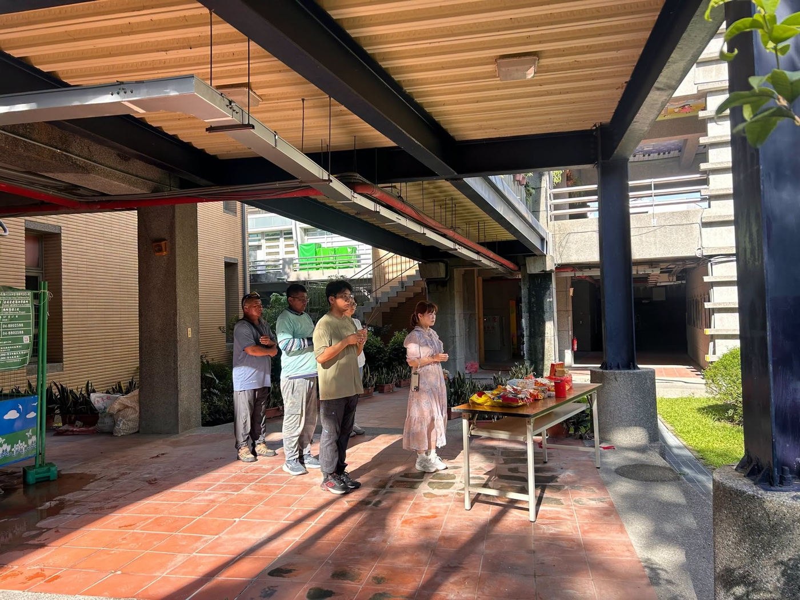
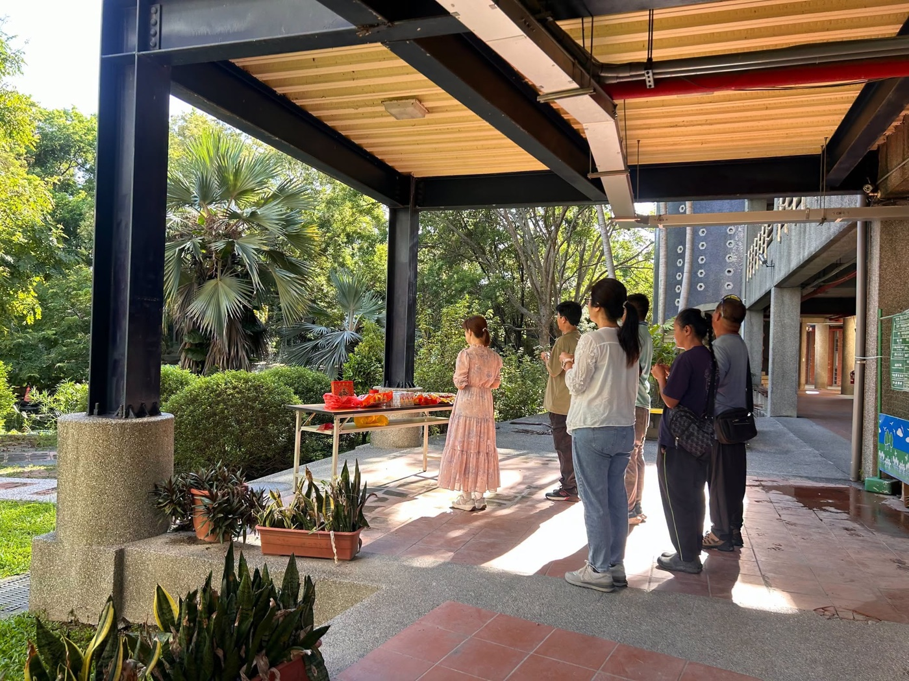
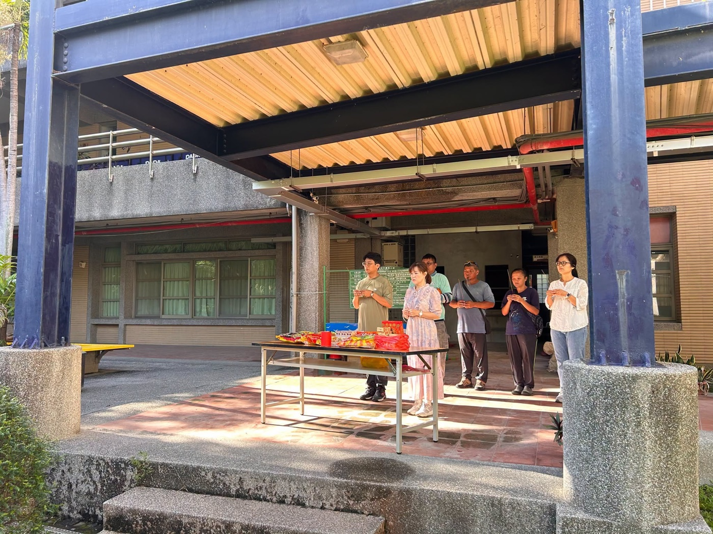

A new chapter begins at Hsinmin Elementary! On July 28th, 2026, Principal Huang Huai-hsuan joined hands with Mr. Hung Hsiao-yen of Chang-Cheng Construction Co. and the project team for a groundbreaking ceremony — the official start of the Ecological Pond Renovation Project.
Together, they offered incense, prayed for a safe construction process, and wished for the project to be completed on time. It was a quiet, meaningful moment — a traditional ritual that honors the earth and marks the beginning of something new.



The ecological pond at Hsinmin is far more than a decorative feature. It is a living classroom — a place where students observe pond life, connect with the natural environment, and develop a sense of wonder about the world around them. Through this renovation, the ground area around the pond will be repaired and upgraded, creating a safer, more comfortable, and more educational space for the whole school community.
We are grateful to Chang-Cheng Construction and all partners involved in making this project possible. We look forward to the day when our renewed eco-pond welcomes students back to explore, discover, and learn in a more beautiful natural setting — carrying Hsinmin's commitment to sustainable campus development ever forward. 🌿
【生態池整建工程 開工祈福】🌿
今天，新民國小生態池地坪整建工程舉行開工祈福儀式，由黃懷萱校長偕同長成營造有限公司洪曉彥老闆及施工團隊，共同虔誠敬拜，祈求工程平安順利、施工圓滿、如期完工。
生態池不僅是校園的一隅景觀，更是孩子們認識自然、生態探索的重要學習場域。透過此次整建，將改善設施品質，打造更安全、更舒適、更具教育意義的生態環境，讓校園永續發展再向前邁進。
感謝所有參與工程的夥伴，期待工程順利完成，為新民國小的師生帶來更優質的學習空間，也祝福施工期間一切平安順心。
Words About Nature & Renewal英語學習角 · 自然與整建相關的小單字
Six key words — tap 🔊 to listen, then try the conversation and quiz.
六個關鍵字，點 🔊 聽發音，再試試對話和小考。
情境：一個學生得知學校生態池整建工程的消息。